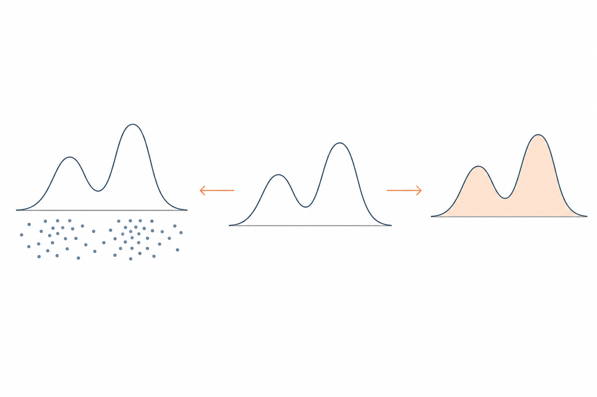
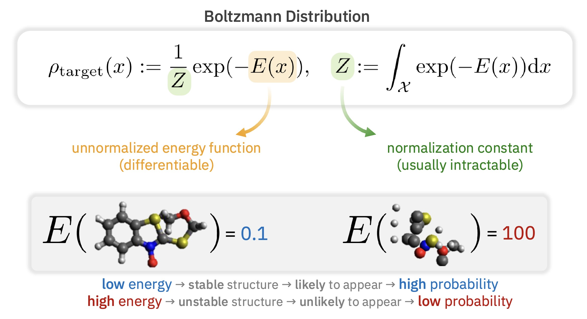
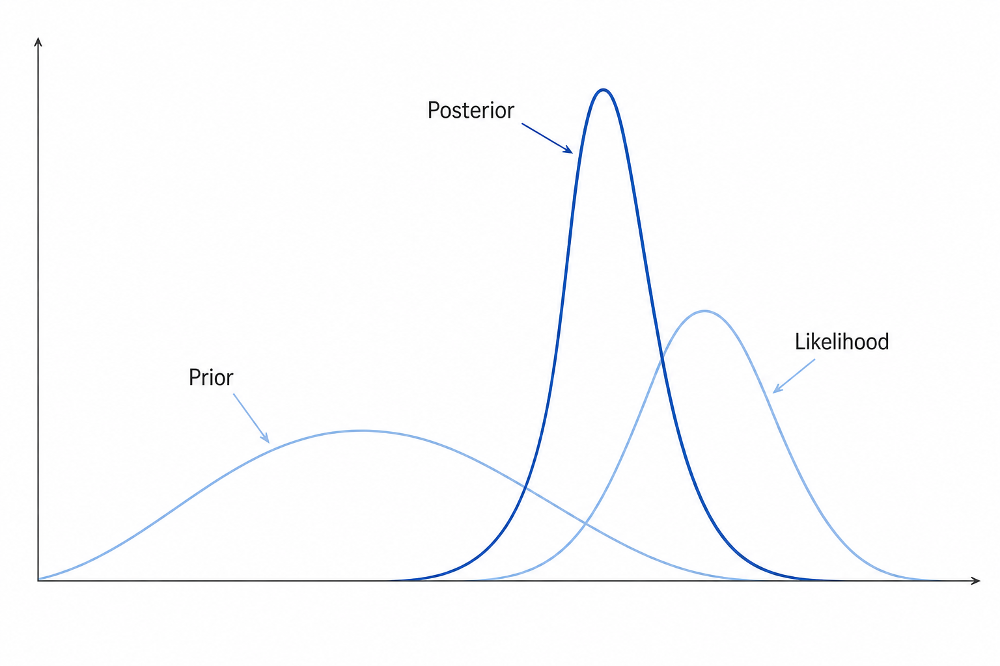
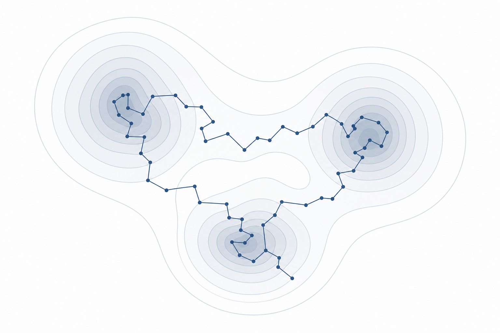
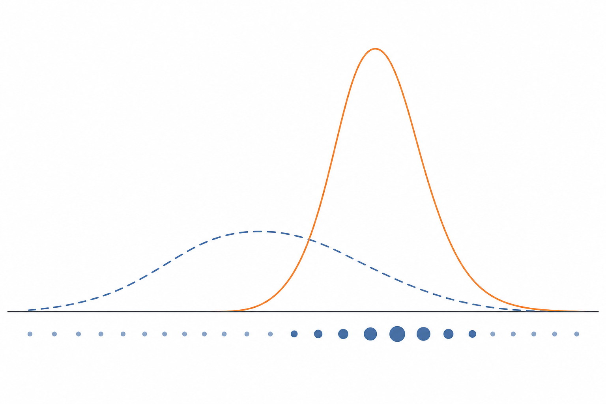
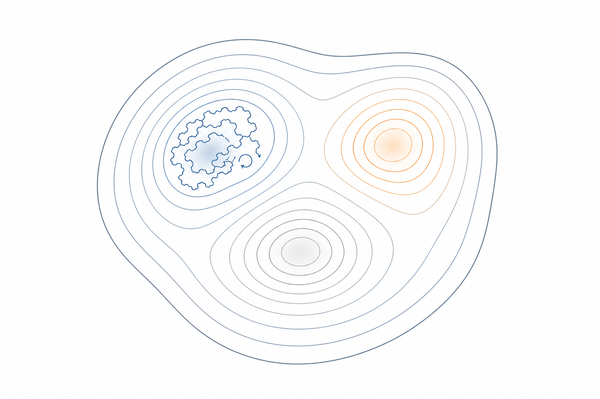
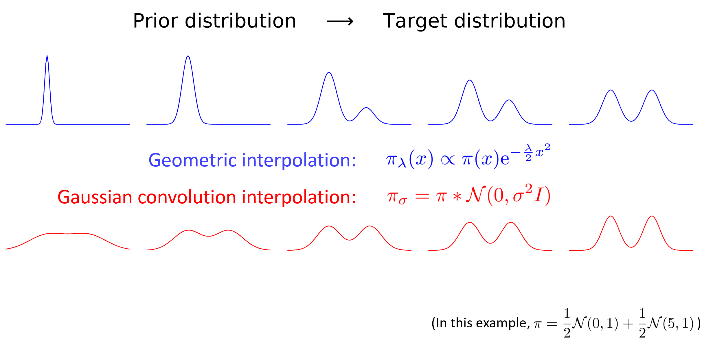
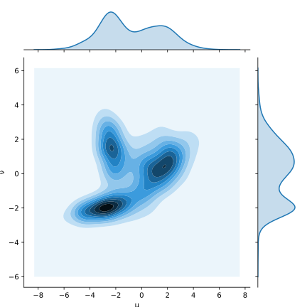
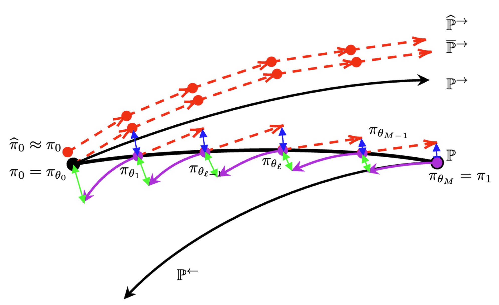
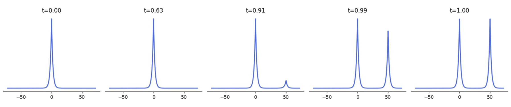

Sampling & Normalizing-Constant Estimation
Wei Guo · joint work with Molei Tao & Yongxin Chen
Georgia Institute of Technology
Given an unnormalized probability density function $\pi \propto \hat\pi := \mathrm{e}^{-V}$ on $\mathbb{R}^{d}$:
Draw $X \sim \pi$.
Estimate $Z = \int_{\mathbb{R}^d} \mathrm{e}^{-V(x)}\,\mathrm{d}x$, or equivalently, the free energy $F = -\log Z$.

Applications: Bayesian posteriors & evidence; the partition function / free energy in statistical mechanics; energy-based & latent-variable models; volume of convex bodies.
They look like two problems — I'll argue they're closely related, and the same number tells you how hard both are.
Why we care
The same $\pi\propto\mathrm{e}^{-V}$ shows up across domains:
Statistical mechanics / molecular dynamics

(Figure: Guan-Horng Liu's talk on ASBS.)
Bayesian inference

unnormalized = likelihood $\times$ prior; $Z=p(\mathcal{D})$ = evidence (marginal likelihood).
Sampling $\leftrightarrow$ configurations / posterior samples; normalizing constant $\leftrightarrow$ free energy / model evidence.
Background
Each task has a classical approach:
Build a Markov chain whose stationary law is $\pi$ (Metropolis–Hastings, Gibbs, Langevin, …) and run the chain till convergence.

With a tractable proposal $\pi_0$: $Z = \mathbb{E}_{\pi_0}\!\left[\frac{\hat\pi}{\pi_0}\right] \approx \frac1n\sum_{i=1}^n \frac{\hat\pi(X_i)}{\pi_0(X_i)}$, $X_i\sim\pi_0$.

Clean and provably efficient when $\pi$ is well-conditioned, or close to $\pi_0$.
Plain Langevin / MCMC gets trapped in one mode $\Rightarrow$ mixing time exponential in mode distance / dimension.
Naive importance sampling has high variance from proposal–target mismatch.
High dimension + multimodality is the shared difficulty.

Bridge $\pi_0 \to \pi$ with a curve of distributions
Two common choices:

Replace one hard jump with many easy steps — break the hard problem down along the curve.
Prerequisite
Vempala & Wibisono (2019). Rapid Convergence of the Unadjusted Langevin Algorithm: Isoperimetry Suffices. NeurIPS.
Algorithm · left rail (sampling)
Run Langevin with a moving target — Annealed Langevin Diffusion (ALD):
Algorithm · right rail (normalizing constant)
A non-equilibrium identity from statistical mechanics. Along ALD, define the work functional
Jarzynski (1997). Nonequilibrium equality for free energy differences. PRL.
Algorithm · right rail (normalizing constant)
ALD : ALMC :: JE : AIS
continuous $\leftrightarrow$ discrete, mirrored on each task
Neal (2001). Annealed importance sampling. Statistics and Computing.
The question
Question: how many oracle calls to $(V,\nabla V)$, with weak assumption on $\pi$?
Gelman & Meng (1998), Simulating normalizing constants: from importance sampling to bridge sampling to path sampling; Brosse, Durmus & Moulines (2018), Normalizing constants of log-concave densities; Ge, Lee & Lu (2020), Estimating Normalizing Constants for Log-Concave Distributions: Algorithms and Lower Bounds.
The toolkit

Optimal transport. (Figure: Wikipedia)
Ambrosio, Gigli & Savaré (2008), Gradient Flows: In Metric Spaces and in the Space of Probability Measures.
The core quantity
the “kinetic energy” of the curve
Example (heat-flow curve $\rho_t=\rho_0*\mathcal{N}(0,2St\,I)$). For any Gaussian mixture $\rho_0=\sum_{i=1}^N w_i\,\mathcal{N}(\mu_i,\sigma^2 I)$:
Independent of the number of modes $N$, weights $w_i$, and means $\mu_i$ — while LSI / PI constants blow up exponentially in $\max_{i,j}\|\mu_i-\mu_j\|$.
The action sees through multimodality that isoperimetry cannot.
The toolkit
Take two SDEs driven by Brownian motion, $t\in[0,T]$:
The KL between their path measures $\mathbb{P}^X, \mathbb{P}^Y$ is
The big picture

Forward $\mathbb{P}^{\rightarrow}$ (the algorithm), backward $\mathbb{P}^{\leftarrow}$, and the compensated reference $\mathbb{P}$ threading the intermediates $\pi_{\theta_\ell}$.
Continuous analysis · left rail (sampling)
Consider two SDEs started at $X_0\sim\tilde\pi_0$, and let $\tilde\pi_t := \pi_{t/T}$:
Pick $v_t$ s.t. $X_t\sim\tilde\pi_t$ for all $t$; by Fokker–Planck, this means $v_t$ generates $\tilde\pi_t$:
Continuous analysis · right rail (normalizing constant)
A new player: the backward SDE $\mathbb{P}^{\leftarrow}$ — ALD run backward in time with time-reversed Brownian motion $B^{\leftarrow}$:
Crooks fluctuation theorem:
Estimator $\hat Z = Z_0\,\mathrm{e}^{-W(X)}$, $X\sim\mathbb{P}^{\rightarrow}$.
Key step: the error is the fluctuation of the RN derivative, bounded through the reference $\mathbb{P}$:
Crooks (1998), Nonequilibrium Measurements of Free Energy Differences for Microscopically Reversible Markovian Systems; Crooks (1999), Entropy production fluctuation theorem and the nonequilibrium work relation for free energy differences; Vargas, Padhy, Blessing & Nüsken (2024), Transport meets Variational Inference: Controlled Monte Carlo Diffusions.
The reveal
Key quantity: the action $\mathcal{A}=\int_0^1 |\dot\pi|_\theta^2\,\mathrm{d}\theta$.
Jerrum, Valiant & Vazirani (1986), Random generation of combinatorial structures from a uniform distribution, Theoretical Computer Science.
Discrete time
to reach $\mathrm{KL}(\pi\|\cdot)\le\varepsilon^2$.
to get $\hat Z$ s.t. relative error $\le\varepsilon$ w.h.p.
Theoretical payoff
Target: a Gaussian mixture with equal-norm means $\|y_i\|=r$; $V=-\log\pi$ is $B$-smooth with $B=\beta(4r^2\beta+1)$:
Geometric annealing curve and its action:
$\mathcal{A}$ is polynomial $\Rightarrow$ $\mathrm{poly}\!\left(d,\beta,r,\tfrac{1}{\varepsilon}\right)$ oracle complexity.
LSI constant $C_{\mathrm{LSI}} = \Omega\!\left(\mathrm{e}^{\Theta(\beta r^2)}\right)$ $\Rightarrow$ exponential complexity.
Beyond geometric interpolation
exponential in the mode separation
Mass teleportation / Mode switching: weights of the modes change dramatically, so mass must teleport across a large distance.

Figure: Chemseddine, Wald, Duong & Steidl (2025), Neural Sampling from Boltzmann Densities: Fisher–Rao Curves in the Wasserstein Geometry, ICLR.
Beyond geometric interpolation
Beyond geometric interpolation
RDS (RDMC / RSDMC / ZODMC / SNDMC) simulate the time-reversal of OU with a learning-free score estimator $s_t \approx \nabla\log\bar\pi_t$:
Estimator $\hat Z = \mathrm{e}^{-W(X)}$, $X\sim\widehat{\mathbb{Q}}$, with the work functional
RDMC: Huang, Dong, Hao, Ma & Zhang (ICLR 2024), Reverse Diffusion Monte Carlo. RSDMC: Huang, Zou, Dong, Ma & Zhang (COLT 2024), Faster Sampling without Isoperimetry via Diffusion-based Monte Carlo. ZODMC: He, Rojas & Tao (NeurIPS 2024), Zeroth-Order Sampling Methods for Non-Log-Concave Distributions: Alleviating Metastability by Denoising Diffusion. SNDMC: Vacher, Chehab & Korba (NeurIPS 2025), Sampling from multi-modal distributions with polynomial query complexity in fixed dimension via reverse diffusion.
Beyond geometric interpolation · the closing idea
Closed-form drift $\nabla\log\pi_\theta$, but possibly exponential action $\mathcal{A}$.
Polynomial action $\mathcal{A}$, but the drift $\nabla\log\bar\pi_t$ has no closed form $\Rightarrow$ must be estimated.
You pay either in the curve or in the drift.
Wrap up
Looking ahead
Looking ahead
Joint work with Molei Tao & Yongxin Chen.
Sampling (ICLR’25): arxiv.org/abs/2407.16936
Normalizing constant (ICLR’26): arxiv.org/abs/2502.04575
Created with Opus 4.8 using the Codeck skill (https://github.com/hiyeshu/codeck)